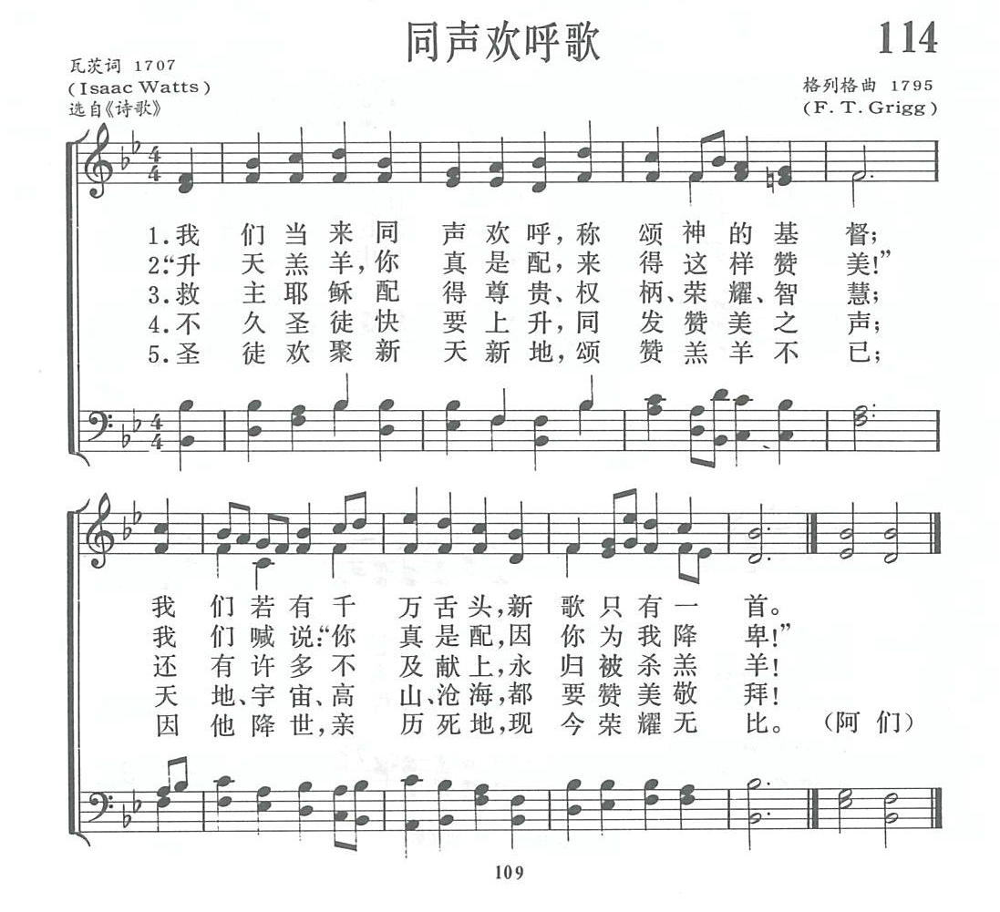

|
|
|
|
1 Come, let us join our cheerful songs
2 "Worthy the Lamb that died," they cry,
3 Jesus is worthy to receive
4 Let all creation join in one
|
1.我们当来同声欢呼 称颂神的基督 我们若有千万舌头 新歌只有一首 2.升天羔羊 你真是配来得这样赞美 我们喊说你真是配 因你为我降卑 3.不久圣徒快要上升 同发赞美之声 天地宇宙高山沧海 都要赞美敬拜 4.圣徒欢聚新天新地 颂赞羔羊不已 因他降世亲历死地 现今荣耀无比 历死地 现今荣耀无比 阿们 |
|
https://www.zanmeishige.com/tab/13787.html?songbook=1&index=114
 |
|
|
|
|

114首 《同声欢呼歌》 https://youtu.be/rQIVHqE9FXc
| Text: | Come, let us join our cheerful songs |
| Author: | Isaac Watts, 1674-1748 |
| Tune: | NATIVITY |
| Composer: | Henry Lahee |

| Text Information | |
|---|---|
| First Line: | Come, let us join our cheerful songs |
| Author: | Isaac Watts, 1674-1748 |
| Meter: | CM |
| Language: | English |
| Publication Date: | 2011 |
| Scripture: | ; ; ; ; |
| Topic: | The Communion of Saints |
Notes
Come, let us join our cheerful songs. I. Watts. [Praise.] This is one of the most widely known and highly esteemed of Watts's compositions. It has no special history beyond the fact that it appeared in his Hymns & Sacred Songs, 1707, and the enlarged edition, 1709, Bk. i., No. 62, in 5 stanzas of 4 lines, and was headed “Christ Jesus the Lamb of God, worshipped by all the Creation, Rev. v. 11-13." The most popular form of the hymn is in 4 stanzas, the stanza "Let all that dwell above the sky (iv.) being omitted. This text was adopted by Whitefield, 1753: Madan, 1760; De Courcy, 1775; Toplady, 1776, and many others amongst the older compilers, and is retained by far the greater number of modern editors, both in Great Britain and America. The hymn, in whole, or in part, has been rendered into many languages, including one in Latin, "Venite, Sancti, nostra laeta carmina," in Bingham's Hymnologia Christiana Latina, 1871.
--John Julian, Dictionary of Hymnology (1907)
une Information
| Title: | NATIVITY (Lahee) |
| Composer: | Henry Lahee (1855) |
| Meter: | 8.6.8.6 |
| Incipit: | 33355 11321 66217 |
| Key: | B♭ Major |
| Copyright: | Public Domain |
Notes
Henry Lahee (b. Chelsea, London, England, 1826; d. Croydon, London, 1912) composed NATIVITY, which was first published in 1855 and set to a nativity hymn (thus the tune's title), "High let us swell our tuneful notes," by Philip Doddridge (PsH 335). Because NATIVITY was published with Isaac Watts' (PsH 155) "Come let us join our cheerful songs" in the 1875 edition of Hymns Ancient and Modern, it has often been set to that text. NATIVITY is the only Lahee tune still in common use.
After studying music privately, Lahee became organist at several churches. His most prominent position was at Holy Trinity Church, Brompton, England, where he was organist from 1847-1874. While in that position he joined his vicar, W. J. Irons, in producing The Metrical Psalter (1855); NATIVITY was included in an appendix to that collection. A composer of cantatas and many madrigals and glees, Lahee also compiled One Hundred Hymn Tunes (1857) for use with a collection of hymn texts edited by Irons.
A cheerful tune, NATIVITY is distinguished both by its brevity and by its opening dramatic "rocket" figure. Sing in two long lines with stanzas 1 and 5 in unison and stanzas 24 in harmony. The fanfare-like opening and royal character of this psalm invite brass accompaniment.
For the final stanza, add the fine descant by Florence Mary Spencer Palmer ("Peggy"; b. Thornbury, Gloucestershire, England, 1900; d. Bristol, England, 1987) from the Anglican Hymn Book, 1965. Palmer studied piano and composition in her youth and later taught those disciplines, both privately and at various schools in the Bristol area. In addition to her many hymn tunes she composed music for piano, cello, and voice.
--Psalter Hymnal Handbook
Read Less
第114首 同声欢呼歌 Come，let us join our cheerful songs _瓦茨
经文：“曾被杀的羔羊是配得权柄、丰富、智慧、能力、尊贵、荣耀、颂赞的”(启5：12)。
这首诗是英国圣诗之父瓦茨(事略参阅第12、22首)所写的。在当时说来是最早的一首基督教圣诗，
原来的标题是“全宇宙敬拜的基督耶稣上帝的羔羊”(启5：11、23)。瓦茨的诗，充分表现出信徒快乐的情绪和普世万人同声高唱的热忱：
天地、宇宙、高山、沧海，都要赞美敬拜!
曲作者格列格(F．T.Grigg，约172O一1768)事略不详。
Words: Isaac Watts (b. July 17, 1674; d. Nov. 25, 1748)
Music: Gräfenberg, by Johann Crüger (b. Apr. 9, 1598; d.
Feb. 23, 1662)
Links:
Wordwise Hymns (Isaac
Watts)
The Cyber
Hymnal
Hymnary.org
Note: Isaac Watts has been justly called the Father of English Hymnody. In a day when the church he attended sang only the Psalms, he argued that they were missing a great deal of important New Testament truth. When the church agreed to try some new songs, he proceeded to write them, around six hundred of them, before he was done. Some we still sing, centuries later.
There are things we choose to do for fun, and others we do because they’re necessary. We may listen to music because we enjoy it. But when it comes to eating our food, we need to do that to live. Whether it’s enjoyable or not is another matter.
There are certainly exceptions, but to some extent we have a responsibility for our attitudes–enjoyment, or otherwise. We can respond to the challenges of life with misery or mirth, grumbling or gratitude. Many times when something is painful or difficult, we may be able to look beyond it and find pleasure in the end result. Surgery provides an example. Not pleasant in itself, but with the potential of benefits up ahead.
The early Christians looked at persecution in a positive way. When they were arrested and beaten for preaching the gospel (Acts 5:40), “they departed from the presence of the council, rejoicing that they were counted worthy to suffer shame for His [Jesus’] name” (vs. 41). And when the Apostle Paul was put in prison, he saw a opportunity to tell his guards about Christ, and realized his courage in prison spurred other believers to new boldness in their witness (Phil. 1:12-14).
The Lord Jesus Himself provides a profound example. He was arrested, and falsely charged, beaten, and finally crucified–a horrific form of punishment. But the Bible says, He “for the joy that was set before Him endured the cross, despising [scorning] the shame, and has sat down at the right hand of the throne of God” (Heb. 12:2). He had joy in paying our debt of sin, and “in bringing many sons to glory” (Heb. 2:10).
The Bible speaks of cheerfulness, and it’s an interesting word. Centuries ago, it came from a word for the human face. Then it grew to mean the emotions and inner attitudes that often show themselves in our faces. “A merry heart makes a cheerful countenance” (Prov. 15:13).
We commonly think of a cheerful person as one who is happy or joyful. But there’s another element to it. The word can also carry the sense of ungrudging, enthusiastic, and prompt. For instance, when the Bible says, “God loves a cheerful giver” (II Cor. 9:7), it means we support the Lord’s work with our gifts, not only joyfully, but promptly, and without grudging.
This is surely to be our attitude when we sing songs of praise to God. It’s a cheerful task we ought to do joyfully, and promptly, without grudging.
David wrote, “The Lord is my strength and my shield; my heart trusted in Him, and I am helped; therefore my heart greatly rejoices, and with my song I will praise Him” (Ps. 28:7).
And Puritan Thomas Watson (1620-1686) said, “Cheerfulness…puts the heart in tune to praise God, and so honours religion by proclaiming to the world that we serve a good Master.”
Pastor and hymn writer Isaac Watts would certainly agree. His song, Come, Let Us Join Our Cheerful Songs, published in 1707, captures something of the atmosphere of joyful praise that surrounds the throne of God, as described in Revelation.
“You [Christ] were slain, and have redeemed us to God by Your blood out of every tribe and tongue and people and nation….Worthy is the Lamb who was slain to receive power and riches and wisdom, and strength and honour and glory and blessing!” (Rev. 5:9, 12).
Watts’ hymn says:
CH-1) Come, let us join our cheerful songs
With angels round the throne.
Ten thousand thousand are their tongues,
But all their joys are one.
CH-2) “Worthy the Lamb that died,” they cry,
“To be exalted thus!”
“Worthy the Lamb,” our hearts reply,
“For He was slain for us!”
CH-3) Jesus is worthy to receive
Honour and power divine;
And blessings more than we can give,
Be, Lord, forever Thine.
CH-5) The whole creation join in one,
To bless the sacred name
Of Him who sits upon the throne,
And to adore the Lamb.
Questions:
1) Can you list three wonderfully “cheerful” (joyful) hymns?
2) Can a believer be cheerful, yet sensitive to, and in tune with, those going through trials? (How can these be expressed together?)
Links:
Wordwise Hymns (Isaac
Watts)
The Cyber
Hymnal
Hymnary.org
https://wordwisehymns.com/2018/04/02/come-let-us-join-our-cheerful-songs/